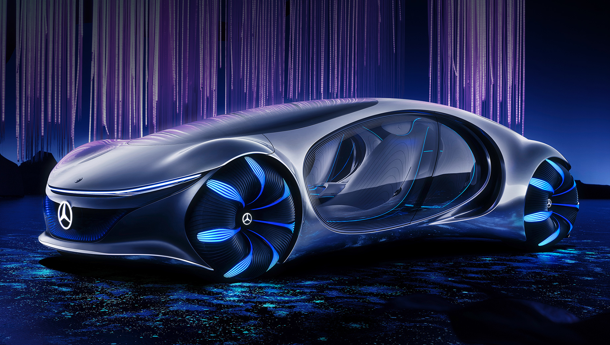

Первая мировая война, обрушение курса валюты, а также проникновение на внутренний рынок Германии зарубежных производителей, таких как Ford Motor
Company, привели к серьёзному структурному кризису в немецкой автомобильной промышленности. 28 июня 1926 года две конкурирующие фирмы решили объединиться,
образовав новый концерн Daimler-Benz, который смог эффективно использовать опыт и знания конструкторов обеих компаний. Руководителем нового предприятия был
назначен Фердинанд Порше. Он полностью обновил производственную программу, взяв за основу последние модели Daimler-Motoren-Gesellschaft, выпускавшиеся теперь
под маркой Mercedes-Benz. Первой новой разработкой Порше в 1926 году стала компрессорная серия, включавшая модель Mercedes 24/100/140 PS с шестицилиндровым
мотором рабочим объёмом 6240 см3. За большую мощность и скорость (до 145 км/ч) её прозвали «смертельной ловушкой». Она стала базовой для более известной серии S,
состоявшей из моделей S (Sport), SS (Supersport), SSK (Supersport Kurz — «суперспорт короткий») и SSKL (Supersport Kurz leicht — «суперспорт короткий лёгкий»).
В 1928 году Порше покинул Daimler-Benz, а его место занял Ганс Нибель (нем. Hans Nibel). Под его руководством выпускались легковые автомобили Mannheim 370 (англ.)
с шестицилиндровым мотором рабочим объёмом 3,7 л. и Nürburg 500 (англ.) с восьмицилиндровым 4,9-литровым агрегатом, базировавшимися на последних разработках Порше.
В 1930 году появился «Большой Мерседес» (нем. Großer Mercedes) или Mercedes-Benz 770 (W07) с восьмицилиндровым 200-сильным двигателем, рабочим объёмом в 7655 см3 с нагнетателем.
В 1931 году фирма дебютировала в секторе малолитражных автомобилей, где её представлял весьма успешный Mercedes 170 (англ.) с шестицилиндровым мотором, рабочим объёмом в 1692 см3
и независимой подвеской передних колёс.
В 1933 году появились легковой Mercedes-Benz 200 и спортивный Mercedes-Benz 380 (англ.) с 2,0- и 3,8-литровыми моторами. Последний из них был оснащён нагнетателем и имел мощность в
140 лошадиных сил. На базе спортивной модели в 1934 году создали Mercedes-Benz 500K с 5-литровым двигателем, ставший через два года основой для более известного большого компрессорного
автомобиля Mercedes-Benz 540K (англ.). В 1934—1936 годах фирма выпустила лёгкий Mercedes-Benz 130 (англ.) с четырёхцилиндровым 26-сильным двигателем заднего расположения, рабочим объёмом
всего 1308 см3, за которым последовали родстер 150 (англ.) и седан 170H (англ.).
Под техническим руководством главного конструктора Макса Зайлера, сменившего Нибеля в 1935 году, созданы популярная недорогая модель 170V с четрёхцилиндровым мотором рабочим объёмом 1697 см3,
первый в мире серийный легковой автомобиль с дизельным двигателем Mercedes-Benz 260 D (1936 год), а также новый «Большой» Mercedes-Benz 770 (W150) (1938 год) с рамой из балок овального сечения
и задней пружинной подвеской, служивший нацистским лидерам.
Во время Второй мировой войны концерн Daimler-Benz выпускал как грузовики, так и легковые автомобили различных классов. Однако двухнедельная воздушная бомбардировка англо-американскими ВВС в
сентябре 1944-го года превратили Daimler-Benz Aktiengesellschaft в руины. Разрушение крупного концерна оценивались по-разному: главный цех в Штутгарте был разрушен на 70 %, двигательный и
кузовной цеха в Зинделфингене — 85 %, цех грузовиков в Гаггенау был полностью уничтожен. Бывшей фабрике Benz & Cie. в Маннгейме повезло больше всех — всего 20 % разрушения, а завод дизельных
двигателей Berlin-Marienfelde, приобретённый в 1902, полностью сравняли с землёй. Когда оценки разрушения были готовы к январю 1945-го года, совет директоров постановил, что «Daimler-Benz
физически больше не существует».
